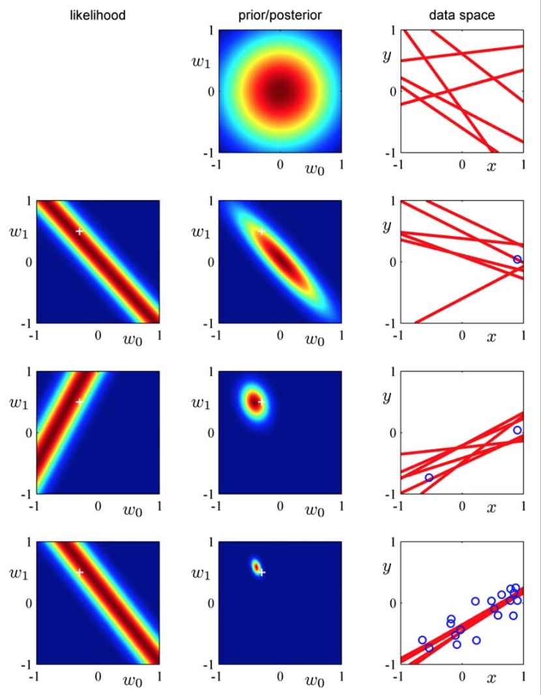

本章接下来的几小节将从贝叶斯概率的角度重新审视线性回归模型。
在前面的讨论里，我们使用最大似然法针对线性回归模型给出了一个漂亮的解析解。然而，最大似然法并不能帮助我们选择模型的有效复杂度——基函数的个数或是正则项的系数。简单地使用MLE几乎总是会导向一个极其复杂的模型从而使得模型过拟合现象的发生。一个常见的解决方案是从训练数据中随机挑选出一部分数据作为验证集来确定模型的复杂度1。
而下面要介绍的贝叶斯方法，将从根本上解决MLE存在的模型过拟合问题，且仅从训练数据中就可以自动地确定出模型的有效复杂度。
参数的先验/后验分布
贝叶斯学派认为，模型的参数是一组有着先验分布的随机变量；观测数据集改变了这些参数的后验分布，进而影响到模型对预测变量概率分布的估计。
对于线性回归模型参数\(w\)的先验分布，考虑到似然函数\(p(t|w)\)是\(w^2\)的指数函数，我们取其共轭分布——也即高斯分布函数——作为\(w\)的先验分布：
\[p(w) = \mathcal{N}(w|m_0, S_0)\]
接下来，我们计算\(w\)在观测数据集\(\mathcal{D}\)上的后验分布\(p(w|t)\)——其正比于\(\mathcal{D}\)的似然函数\(p(t|w)\)与\(w\)的先验分布\(p(w)\)的乘积。由于我们选择了高斯共轭的先验分布假设，这个后验分布也是一个高斯分布。假定数据上的噪声（似然分布的标准差）由一个超参数\(\beta\)来控制。通过幂次项对齐，我们得到这一后验分布的参数：
\[p(w|t) = \mathcal{N}(w|m_N, S_N)\]
其中，
\[\begin{align*}
m_N & = S_N(S_0^{-1}m_0+\beta\Phi^Tt) \\
S_N^{-1} & = S_0^{-1} + \beta\Phi^T\Phi
\end{align*}\]
由于高斯分布的最大值恰好是其均值，因此MAP（最大后验概率法）给出的\(w\)的解为：
\[w_{MAP} = m_N\]
为了简化分析，通常我们取\(w\)的先验分布为一个各向同性（isotropic）且均值为\(0\)的高斯分布：
\[p(w|\alpha) = \mathcal{N}(w|0, \alpha^{-1}I)\]
此时，\(w\)的对数后验分布简化为：
\[\ln p(w|t) = -\frac{\beta}{2}\sum_{n=1}^N\{t_n - w^T\phi(x_n)\}^2 - \frac{\alpha}{2}w^Tw + const\]
最大化这个对数后验分布恰等价于最小化带正则项的误差平方和损失函数！
最后，我们从序列学习的角度来直观地理解后验分布的学习过程。

上图展示了使用贝叶斯方法拟合线性模型\(y(x,w)=w_0+w_1x\)的学习过程。在没有观测到任何训练数据时，\(w\)服从一个先验的高斯分布（第一行中）；每观测到一条训练数据，\(w\)的后验分布也随之发生变化。图中最左列给出了这条训练数据对应的似然值与\(w\)的函数关系（注意其在\(w\)空间上的等高线是两条平行线：\(|t_k-w_0-w_1x_k| = c\)）。将这个似然函数与上一行中\(w\)的先验分布相乘，我们就得到了\(w\)的后验分布。不断地重复这一过程，可以看出\(w\)的后验分布逐渐变成了聚焦在其真实值附近的delta函数。图中最右列给出了\(w\)每一种后验分布下的抽样模型。
目标变量的预估分布
不过在实际中，我们通常并不关心\(w\)的取值——目标变量\(t\)的分布才是我们预估的目标：
\[p(t|\mathbf{t}, \alpha, \beta) = \int p(t|w, \beta)p(w|\mathbf{t}, \alpha, \beta)dw\]
可见，在贝叶斯学派的理论里\(w\)只是模型的一个隐变量。
对上式展开计算（对两个高斯分布的卷积操作），我们得到\(t\)的预估分布依然是一个高斯分布：
\[p(t|x, \mathbf{t}, \alpha, \beta) = \mathcal{N}(t|m_N^T\phi(x), \sigma^2_N(x))\]
其中分布的方差满足：\(\sigma^2_N(x)=\beta^{-1}+\phi(x)^TS_N\phi(x)\)
从上式中可以看出，\(E[t|x]=m_N^T\phi(x)=w_{MAP}^T\phi(x)\)，也就是说，在高斯分布假设下的线性模型里，贝叶斯概率对目标变量的预估等同于最大后验概率法给出的模型。
方差项则表明，随着观测到更多的数据，\(t\)的不确定性也越小（本质上，这是由于\(w\)的不确定性变小）2。
等价核函数模型
从贝叶斯概率的后验解出发，我们可以导出线性模型的另一种解释：基于核方法的模型（从最大似然法给出的正则解也能得出类似的结论）。
在上面的讨论中，我们得到了目标变量\(t\)的后验分布和预估均值（式子中\(x_n\)是观测数据，\(x\)是待预估数据）：
\[y(x, m_N) = m_N^T\phi(x) = \beta\phi(x)^TS_N\Phi^Tt=\sum_{n=1}^N{\beta\phi(x)^TS_N\phi(x_n)t_n}\]
另\(k(x, x')=\beta\phi(x)^TS_N\phi(x')\)，
则有：
\[y(x) = \sum_{n=1}^Nk(x, x_n)t_n\]
也就是说，对目标变量\(t\)的线性回归等价于对训练数据集上\(t_n\)的一个线性组合（类似于KNN等非参模型的估计），其中线性组合的权重\(k(x, x')\)也被称为等价内核（equivalent kernel）。一般我们会固定\(x\)，将其看作是\(x'\)的函数来研究。核函数具体的形式依赖于训练数据集上的\(x_n\)。
\(k(x, x')\)具有良好的局域性：在距离\(x\)越近的点上的取值越大。这也符合我们的认知：我们在对目标变量进行预估时也倾向于赋予\(x\)附近的\(t_n\)更高的权重。这种局域性对于包括高斯函数在内的多种基函数都成立。
线性回归模型的核函数表达让我们对回归问题有了新的认识：我们可以直接建立用一组局部核函数来对未知变量进行回归预估的模型。这个模型框架被称为高斯过程（Gaussian processes），在后面的章节的学习中我们会详细介绍。
最后，注意到核函数是归一化的。对于任意\(x\)，均满足：
\[\sum_{n=1}^N{k(x, x_n)} = 1\]
但这并不意味着我们对目标变量的预估一定是训练数据集的凸组合（convex combination）——因为核函数可负可正。
模型选择
在前面的章节里，我们讨论了最大似然估计所隐含的模型过拟合问题，也提出了如何用交叉验证的方法选择合适的模型。在本小节里，我们将从贝叶斯概率出发探讨模型选择的问题。
设若我们有\(L\)个候选模型\(\{\mathcal{M}_i\}\)（这里的\(\mathcal{M}_i\)可以理解为是一组超参数，例如线性回归模型里的\(\alpha_i\)和\(\beta_i\)）和一组由其中某个未知模型\(\mathcal{M}_k\)所产生的观测数据集\(\mathcal{D}\)，我们的目标是要从观测数据集\(\mathcal{D}\)中找到其背后真实的模型\(\mathcal{M}_k\)。
我们可以用一个后验概率\(p(\mathcal{M}_i|\mathcal{D})\)表示我们对模型选择的不确定性：
\[p(\mathcal{M}_i|\mathcal{D}) \sim p(\mathcal{M}_i)p(\mathcal{D}|\mathcal{M}_i)\]
其中，\(p(\mathcal{M}_i)\)是模型的先验概率，我们通常假定这是一个与模型无关的常量。因此，我们更关注上式中乘积的第二项：\(p(\mathcal{D}|\mathcal{M}_i)\)，也被称为model evidence，或边缘似然函数（marginal likelihood）。注意，与前面介绍到的似然函数不同，边缘似然是一个建立在模型超参数空间上的似然函数——事实上，它的名字正是源于其对参数空间\(w\)的边缘化。两个模型在同一个数据集上的边缘似然的比值也被称为Bayes factor，正如我们下面要看到的，是模型选择的一个重要依据。
一旦我们得到了模型的边缘似然，也就得到了这个模型的后验概率分布。进一步地，我们可以用一个全概率公式预估目标变量的概率分布：
\[p(t|\mathbf{x}, \mathcal{D}) = \sum_{i=1}^L{p(t|\mathbf{x}, \mathcal{M}_i, \mathcal{D})p(\mathcal{M}_i|\mathcal{D})}\]
不过这个公式的计算很复杂，在实际中，我们通常是选择一个后验概率最大（也即边缘似然最大）的模型来近似在整个模型空间上的求和。
那么，如何计算这个边缘似然函数呢？依然借助全概率公式，我们将边缘似然在参数空间\(w\)上展开：
\[p(\mathcal{D}|\mathcal{M}_i) = \int{p(\mathcal{D}|\mathbf{w}, \mathcal{M}_i)p(\mathbf{w}|\mathcal{M}_i)}d\mathbf{w}\]
事实上，这也正是之前在用贝叶斯公式计算\(w\)的后验分布\(p(\mathbf{w}|\mathcal{D}, \mathcal{M}_i)\)时的归一项分母:
\[p(\mathbf{w}|\mathcal{D}, \mathcal{M}_i) = \frac{p(\mathcal{D}|\mathbf{w}, \mathcal{M}_i)p(\mathbf{w}|\mathcal{M}_i)}{p(\mathcal{D}|\mathcal{M}_i)}\]
我们可以用这个公式计算出候选模型的边缘似然，然后通过最大化这个似然函数进行模型的选择。
边缘似然函数与模型的复杂度有着密切的联系。书中通过一些假设简化了似然函数的计算，给出了这一联系的直观理解。这里就不再赘述。总的来说，简单或复杂的模型在同一份数据集上都有着较低的似然，因此，最大似然总会给出一个合适的复杂度，从而避免了模型过拟合的问题。事实上，考虑两个模型\(\mathcal{M}_1\)和\(\mathcal{M}_2\)，如果我们假定其中一个模型\(\mathcal{M}_1\)是数据真实分布的模型，那么在所有数据集上对这两个模型的Bayes Factor积分，得到一个KL散度：
\[\int{p(\mathcal{D}|\mathcal{M}_1)\ln\frac{p(\mathcal{D}|\mathcal{M}_1)}{p(\mathcal{D}|\mathcal{M}_2)}}d\mathcal{D}\]
这个式子恒大于\(0\)。因此，平均意义上，我们总能通过最大化\(p(\mathcal{D}|\mathcal{M})\)得到一个近似真实的模型。
讨论到这里，我们可以简单总结一下频率学派和贝叶斯学派在对模型拟合和模型选择的方法上的比对。
频率学派假定了模型的参数是一个客观存在的事实，并通过最大似然法的点估计去拟合这个参数。在模型选择上，频率学派采用了交叉验证的方法。而这一方法的本质是在一个验证数据集上去计算模型超参数的似然，并选择最大似然值所对应的模型。值得注意的是，频率学派认为模型的参数是一个确定的值，因此将这个参数的最大似然估计\(w^*\)代入到对模型超参数的似然函数的计算中，也即\(p(\mathcal{D}|w^*, \lambda)\)。这个似然函数形式上等同于\(w\)的似然函数。实际应用中，这意味着我们可以在验证集上用同一个误差损失函数优化模型的超参数。
而贝叶斯学派则认为模型的参数是一个由超参数控制的随机变量，并通过最大后验概率法给出模型参数的一个点估计——虽然更多情况下是把模型参数视为一个隐变量去计算目标变量在数据集和超参数上的边缘概率分布。由于这个后验概率是固定模型超参数下的一个条件分布，我们无法直接用其优化模型的超参数——这意味着在实际应用中我们无法在训练集上用同一个误差损失函数同时优化模型参数和正则化系数。事实上，在模型选择时，贝叶斯学派专门设计了一个超参数的边缘似然分布，可以通过在训练集上最大化这个边缘似然函数来找到合适的超参数。这个边缘似然函数是在整个参数空间上对参数的似然函数的期望。
可以看出，贝叶斯学派在模型选择时用到的最大边缘似然函数法，与频率学派在模型拟合时用到的最大似然法，二者在基本思想上是一致的（都是通过最大化一个似然函数进行点估计）。而频率学派在模型选择时是通过在另一份独立数据集上最大化一组最优参数所对应的似然函数来寻找超参数；贝叶斯学派则是在同一份数据集上建立了一个全局似然函数来寻找超参数。
因此，与频率学派的MLE相比，贝叶斯的MAP或预估变量的边缘概率分布并不能解决模型过拟合的问题——事实上，选择不恰当的超参数依然会导致模型较高的泛化误差。贝叶斯方法的真正优势是提出了一个建立在参数空间上的边缘似然函数，从而可以在一份训练数据集上同时优化模型的参数和超参数，并避免过拟合的问题。
最后，书中给出了贝叶斯模型选择方法在线性回归模型上的应用，这里也不再赘述。